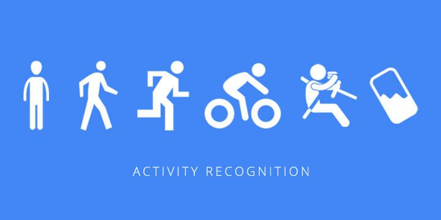
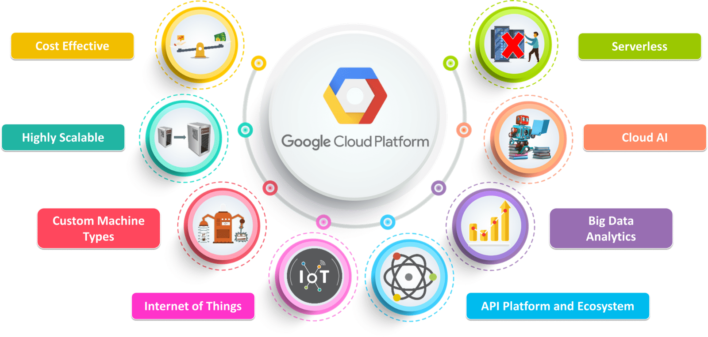

AbstractIn a world of a globalized economy, maritime surveillance is a crucial element. Today maritime transportation is considered to carry more than 90% of long-distance world trade. Due to this rapid growth in

In this post, I am going to talk about one of my main and very interesting project done in the university. As the title suggests, it is FPGA based processor implementation done to

Real-time and online action localization in a video is a critical yet highly challenging problem. Accurate action localization requires utilization of both temporal and spatial information. Recent attempts achieve this by using computationally

Core Infrastructure — Introduction Google cloud platform (GCP) is a platform offered by Google with main 4 services run on the infrastructure that Google uses for some well known applications such as Youtube and